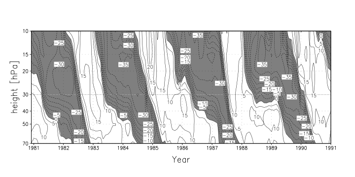

Executive Summary
AI weather models have already overtaken physics models — refined over decades — at forecasts a few days out. Yet the same models keep collapsing when faced with the slow rhythms of climate that repeat over months to years. The usual reading of this failure is "the accuracy just isn't there yet." This report reads it differently. The problem is not accuracy but how training samples time. What a model can learn, and what it can never learn, is decided not by parameter count or data volume but by the way the training signal slices time.
Data-driven weather models learn by stitching together states a few hours apart and predicting the next one. That interval is often quoted as six hours, but it varies by model. More decisive is that the span the loss function actually unrolls during training reaches, at most, a few days. Open up six representative models and even the most generous case is five days. As a result, low-frequency signals that breathe on cycles of months to years — the quasi-biennial oscillation, or El Niño — never once enter the training signal in full.
This principle is not confined to weather. Anywhere a predictive model is built from time series, sensors, or operational logs, how densely and how long the data was sampled sets, in advance, the ceiling on the cycles the model can learn. In Pebblous's view, data quality has to reach beyond static dimensions like missingness and noise to a dynamic one: the structure of how time is sampled. This piece traces, through the training procedures of six models, how the line between what AI forecasting won and what it cannot learn ultimately lies in the structure of the data.
~90%
Share of short-range cases where AI beats the physics model
GraphCast variable–lead-time combinations vs. ECMWF HRES
5 days
Longest span the training loss actually unrolls
Longest case among six models (NeuralGCM)
~170×
How far the nearest low-frequency rhythm sits beyond that window
QBO's 28 months vs. 5 days (~3,400× against a 6-hour step)
~1/3
Share of 30-year simulations that destabilized mid-run
Stability is not the same as learning rhythm (NeuralGCM family)
Yesterday's Question, Today's
Just a day ago, we published a piece on this blog arguing that AI weather models forecast the future using a climate that is twenty years old. The question there was "what did the model learn?" If the distribution of the training data leans toward the past, then even the most sophisticated model overlays that stale climate onto the future. Today's piece drops that question one level down. Not what was learned, but how training sampled time.
The two questions rhyme, but they sit on different layers. If the earlier piece was about the data's content being stale, this one is about how the very act of slicing data along the time axis decides what can be learned at all. Different causal layers producing the same failure. The overlapping symptoms — the failure to reproduce low-frequency variability like the quasi-biennial oscillation or the Southern Annular Mode — were already covered in detail in that earlier piece, so we hand them off by link rather than restate them here. Instead, we go looking in the temporal structure of the training procedure for why that failure is a structural limit that accuracy tuning cannot narrow.

The one sentence this piece adds is this. A time scale the training signal never samples cannot, in principle, be learned — no matter how many parameters you add. Data quality has more than static dimensions like missingness and noise; it has a time axis of interval, window length, and coverage.
Winning Days, Losing Years
AI weather models' short-range edge is a quantitatively confirmed reality. Google DeepMind's GraphCast was more accurate than ECMWF's high-resolution physics model HRES on roughly 90% of variable–lead-time combinations, and it lifted forecast skill on core variables such as 500 hPa geopotential height by 7–14%. GenCast, a diffusion-based ensemble model, held the advantage on more than 97% of the targets it was scored against, compared with ECMWF's ensemble forecast. To say AI has won at the scale of a few days is no exaggeration.
Push the same models past two weeks, though, and the story flips. Forecast skill drops below climatology — below "just guess the seasonal average." Even ECMWF officially acknowledges that accuracy falls off sharply in the 15-day-to-two-month range. And when you reach low-frequency variability like the quasi-biennial oscillation (QBO) or the Southern Annular Mode (SAM), even scoring a success rate becomes meaningless — because reproduction itself is judged a failure. The schematic below summarizes how AI's edge reverses as lead time grows.
One thing must be added honestly. This is not "AI sweeps every variable." For some variables, such as 2-meter temperature, the short-range edge converges toward zero, and the one clear improvement in the S2S (subseasonal-to-seasonal) range is FuXi-S2S extending the predictable window of the Madden–Julian Oscillation (MJO) from 30 days to 36. In short, the asymmetry is real: AI sweeps the short range and collapses at low frequencies. Why this asymmetry arises is the subject of the next two sections.
The Step and the Window
Most data-driven weather models are trained autoregressively. They take the atmospheric state at some moment, predict the state a few hours later, then feed that prediction back in as input to predict the next — stitching steps together. There are two distinct time scales here. One is the step interval (Δt) — how many hours a single step jumps. The other, and the more important one, is the training rollout length — how many steps the loss function actually unrolls during training as it computes error.
"Six hours" is often talked about as the standard interval for AI weather models, but open up six representative models and six hours turns out to be a typical value, not a universal constant. GenCast uses a 12-hour step; Pangu-Weather hierarchically combines four models at 1, 3, 6, and 24 hours; NeuralGCM uses continuous-time hybrid integration rather than a discrete step. What they share is not the specific number "six hours" but the structure of a "short step on the order of hours to a day." The table below lays the six models' training intervals side by side with the longest window the training loss actually unrolls.
| Model | Training Δt | Longest training rollout (window the loss sees) |
Design |
|---|---|---|---|
| FourCastNet Pathak 2022 |
6 h | 2 steps = 12 h | Pure autoregressive (AFNO) |
| Pangu-Weather Bi 2023, Nature |
1·3·6·24 h (4 models) |
Single step (up to 24 h) | Hierarchical temporal aggregation |
| GraphCast Lam 2023, Science |
6 h | 12 steps = 3 days | Autoregressive GNN |
| GenCast Price 2024, Nature |
12 h | Single step (diffusion denoising) | Conditional diffusion, autoregressive |
| ACE2 Watt-Meyer 2025 |
6 h | 2 steps = 12 h | Data-driven SFNO (stable rollout of 81 yr+) |
| NeuralGCM Kochkov 2024, Nature |
6 h → increasing | up to 5 days | Hybrid (dynamical core + learned physics) |
The third column is the one that matters most in this table. Among the six models, the longest span the training loss actually unrolls reaches only five days, in NeuralGCM. The rest fall between 12 hours and 3 days. That means the maximum horizon over which training computes error and demands "get it right up to here" is, at most, five days. Within a window a few days long, a signal that cycles on the order of months to years never enters the loss function in full. The figure below places the length of the training window (the gray bars) and the periods of low-frequency rhythms (the orange dots) on the same logarithmic time axis to show the gap.
What Sampling Caps
Here the logic of sampling has to be laid out carefully. Signal processing carries an old intuition: if the observation window is shorter than some period, that period cannot be fully identified. The Nyquist–Shannon sampling theorem is the classic statement of it. But it is not accurate to apply that theorem directly to the autoregressive training of an atmospheric model and declare something "proven." The theorem presumes uniform sampling and a band-limited signal, whereas the atmospheric system is nonlinear and multi-scale. So this piece does not assert. The sampling logic only suggests an upper bound on the learnable time scale; it does not prove one. Understanding it in that direction is the honest reading.
Even so, the direction is clear. If the training loss sees only a window a few days long, a high-frequency phenomenon that oscillates many times within that window is captured richly in the training signal. Conversely, a low-frequency phenomenon that cycles on a period far longer than the window appears, inside the window, as little more than a flat trend. The raw material to be recognized as a rhythm simply never comes in. The figure below contrasts how a fast wave and a slow wave each look inside the same few-day window.
Two practical reasons stack on top of this. First, error accumulation. The longer an autoregressive rollout runs, the more a small error at one step feeds into the next step's input and snowballs. That makes it technically hard to stretch training beyond a few days. Second, over-smoothing and spectral bias. The pressure to reduce error drags the model toward blunter, more averaged values, shaving off sharp extremes and fine variation. When the two combine, the ability to reproduce long-time statistics falls further still. In the end, learning low frequencies requires a longer window — but lengthening the window breaks training. That is the dilemma.
How far that gap actually opens becomes clearer laid out in numbers. The table below divides the periods of representative low-frequency modes by the most generous training window, five days. Even the quasi-biennial oscillation, which sits closest to the training range, is about 170 times beyond that window, and by the time you reach the decadal-to-multidecadal variability of the Pacific and Atlantic, the distance widens to thousands of times. This is an order-of-magnitude distance that no tuning to squeeze out a few percent of accuracy can ever cross. This is what "a structural limit that accuracy cannot narrow" means once you put numbers to it.
| Low-frequency mode | Typical period | Vs. 5-day training window |
|---|---|---|
| QBO Quasi-Biennial Oscillation | ~28 months | ~170× |
| ENSO El Niño–Southern Oscillation | 2–7 years (irregular) | ~146–511× |
| PDO Pacific Decadal Oscillation | 20–30 years (typical) | ~1,825× |
| AMO Atlantic Multidecadal Oscillation | ~60–80 years (estimated) | ~4,380× |
| SAM Southern Annular Mode | Multiple time scales | From ~10-day persistence to interannual components |
Note: The multiples are approximations, each period divided by the longest training window of five days. SAM cannot be pinned to a single period, so it is listed as multiple time scales. PDO and AMO periods vary across the literature, so they are given as typical and estimated values.
Attempts to Cross the Line
Once a limit like this is known, researchers are hardly going to sit on their hands. The approaches fall broadly into two directions. One is to build a model that runs stably for a very long time; the other is a hybrid that couples physical laws into the training. And one fact these attempts have exposed is the central twist of this report. Running stably for a long time and learning the slow rhythms inside that run are two different things.
5.1Stability does not guarantee learning the rhythm
ACE2 is a purely data-driven model, yet it can run autoregressively for 81 years — thousands of years in later variants — without diverging. That is remarkable stability. And yet even that long-running ACE2 fails to reproduce the low-frequency behavior of QBO and SAM. NeuralGCM, a hybrid model, coupled in a physics core and greatly improved its long-time statistics, but about one-third of its 30-year simulations destabilize mid-run. If stability and learning the rhythm were the same thing, that combination could not exist. It is evidence that "lasting a long time" does not mean "learned the slow cycle."

One benchmark study (Baxter et al., 2026) describes these models' low-frequency behavior as failing to reproduce "the slow descent of the QBO and the poleward migration of the annular modes," instead showing "intermittent and at times bizarre behavior." A commentary in the same journal (Scaife, 2026) likens this to the early stage, some twenty years ago, when physics models first began reproducing the QBO. The diagnosis is that on low frequencies, today's AI models stand at exactly that threshold.
5.2The boundary held even as generations changed
What is striking is that this boundary is not the flaw of any one model. From the FourCastNet generation to the GraphCast–GenCast generation, and again to the ACE2–NeuralGCM hybrid generation, the architecture changed fundamentally, yet the boundary of "short-range conquered, low-frequency unsolved" barely moved. Had the problem been a bug in one model, it should have vanished as the generations turned over. That the line holds strongly suggests the cause lies in a shared structure — the temporal structure of the training signal.
5.3Industry is mixing physics and AI
For a present-day anchor, look at NOAA's recent deployment. NOAA's AI-driven global model, AIGFS, produces a 16-day forecast in about 40 minutes using roughly 0.3% of the compute of the legacy GFS. Its ensemble version, AIGEFS, extended the forecast horizon by 18–24 hours on 9% of the resources. But this extension does not mean it learned low frequencies — it means short-range ensemble efficiency improved, and the two must not be confused. What is worth watching is NOAA's direction toward a 62-member hybrid ensemble (HGEFS) combining 31 physics members and 31 AI members. The very choice to mix in physics rather than replace everything with pure AI is a signal that the field recognizes, in practice, the temporal-resolution limit of AI.
The Time Axis of Data Quality
The same logic reaches well beyond weather. Autoregressive training, short steps, and few-day rollouts are not special circumstances peculiar to weather models. For any model doing time-series prediction, how densely (resolution) and how long (window length) the data was sampled already decides the longest cycle that model can ever learn. The sensor logs of industrial equipment, operational metrics, demand time series, and physics-simulation data all rest on the same logic.
This widens the lens on data quality. For a long time we have understood data quality through static dimensions — accuracy, missingness, noise. But viewed through the learnability of a predictive model, quality has a dynamic dimension: a time axis. What is the sampling interval? How long is the observation window? To what band does the temporal coverage reach? These three decide what a model can and cannot learn. The practical principle follows: to teach a model low-frequency, seasonal, or long-period patterns, look at the time axis at the data-design stage, before tuning accuracy.
What a model can learn is set first by the temporal structure of its data, not by parameters or data volume. Acknowledging this ceiling — one that no accuracy race can narrow — is the starting point for cutting wasted tuning everywhere predictive models are built. Learnability is not a tuning problem but a sampling-design problem.
That AI weather models came to beat physics models a few days out is a clear achievement. That they never learn the multi-year rhythm is, at the same time, a clear limit. The line dividing that achievement from that limit lies not in the model's cleverness but in how the training data sampled time. The real boundary between what was won and what cannot be learned is, in the end, the structure of the data.
Editor's Note. The temporal sampling structure this report traces touches the axes Pebblous works with when diagnosing data quality. Taking in not only static signals like missingness and noise but also dynamic ones like temporal resolution and coverage is, in our view, the direction of AI-Ready Data. That said, the conclusion of this piece is not a specific product claim but a principle that applies to anyone building predictive models.
References
Academic papers (models & benchmarks)
- 1.Pathak, J., et al. (2022). FourCastNet: A Global Data-driven High-resolution Weather Model using Adaptive Fourier Neural Operators. arXiv: 2202.11214.
- 2.Bi, K., et al. (2023). Accurate medium-range global weather forecasting with 3D neural networks (Pangu-Weather). Nature. arXiv: 2211.02556.
- 3.Lam, R., et al. (2023). GraphCast: Learning skillful medium-range global weather forecasting. Science. arXiv: 2212.12794.
- 4.Price, I., et al. (2024/2025). Probabilistic weather forecasting with machine learning (GenCast). Nature. arXiv: 2312.15796.
- 5.Watt-Meyer, O., et al. (2025). ACE2: Accurately learning subseasonal to decadal atmospheric variability and forced responses. npj Climate and Atmospheric Science. arXiv: 2411.11268.
- 6.Kochkov, D., et al. (2024). Neural general circulation models for weather and climate (NeuralGCM). Nature. doi: 10.1038/s41586-024-07744-y. arXiv: 2311.07222.
- 7.Baxter, S., et al. (2026). Benchmarking atmospheric circulation variability in ACE2 and NeuralGCM. Geophysical Research Letters. doi: 10.1029/2025GL119877.
- 8.Scaife, A. A. (2026). Successes and Failures of Current AI Climate Models. Geophysical Research Letters. doi: 10.1029/2026GL122615.
- 9.Chen, L., et al. (2024). A machine learning model that outperforms conventional global subseasonal forecast models (FuXi-S2S). Nature Communications. doi: 10.1038/s41467-024-50714-1.
- 10.Ling, F., et al. (2024). FengWu-W2S: A deep learning model for seamless weather-to-subseasonal forecast of global atmosphere. arXiv: 2411.10191.
- 11.Li, G., et al. (2025). TianQuan-S2S: A Subseasonal-to-Seasonal Global Weather Model via Incorporate Climatology State. arXiv: 2504.09940.
Policy, institutions & statistics
- 12.NOAA (2025). NOAA deploys new generation of AI-driven global weather models. noaa.gov press release.
- 13.ECMWF (2025). AI Weather Quest: Advancing sub-seasonal forecasting with AI/ML. ecmwf.int Newsletter #183.
- 14.Climate Data Guide (NCAR). The Quasi-Biennial Oscillation (QBO). climatedataguide.ucar.edu.
- 15.Baldwin, M. P., et al. (2001). The Quasi-Biennial Oscillation. Reviews of Geophysics. (QBO background)
Pebblous-adjacent
- 16.Pebblous Blog (2026-07-08). AI weather models forecast the future using a climate that is twenty years old. blog.pebblous.ai. (Prior piece — the distribution axis)
Note: The time-scale gap multiples (~170×, ~3,400×, etc.) are derived calculations, each low-frequency period divided by the training window or step interval — approximations combining the source figures. We do not give a numeric success rate for low-frequency reproduction because the source benchmarks use qualitative judgments rather than a single skill score.